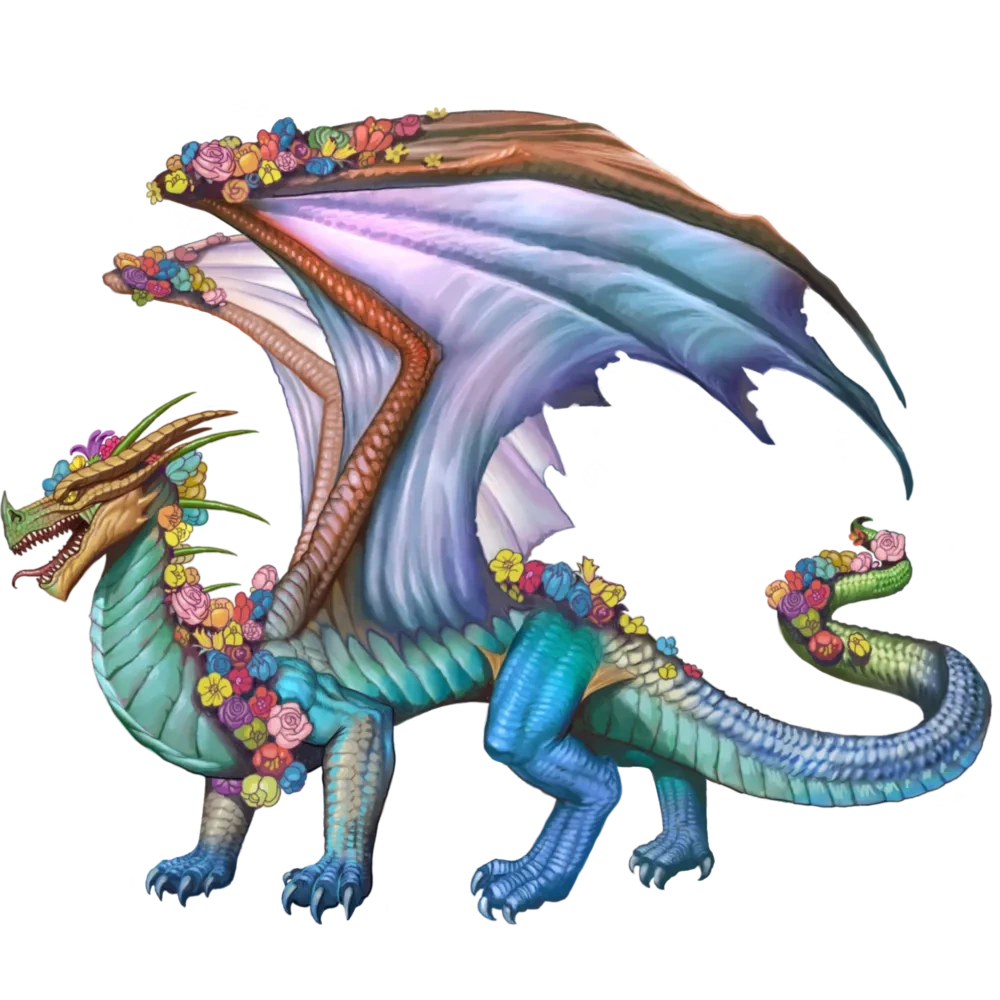
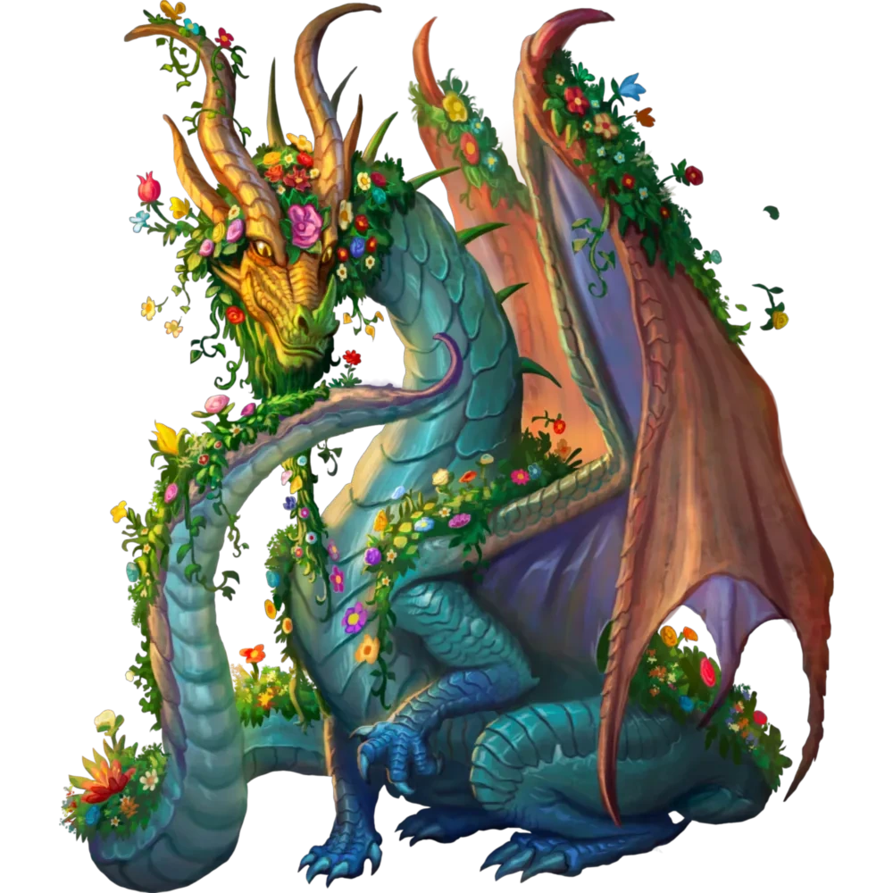

各年龄段数据卡
博学深思的繁花龙是秘术领域的巨匠、死灵学派的研习者，亦是窥探命运的先知。它们象征着一切跨越凡俗生死帷幕的存在，凝视着凡人生命走向终点之际灵魂穿越诸位面的漫漫旅途。繁花龙痴迷于仪式、谜语，以及凿穿界域壁垒、连通异界彼岸的隐秘径途。通过参透这些深奥秘辛，它们也期盼能进一步揭示自然世界的深层真理。 这类莱希龙浑身覆盖着一座绚烂缤纷的移动花园，各色花朵正处于含苞或盛放的不同花期。繁花龙生有虹彩斑斓的鳞片，在活体花束层叠的花瓣之下折射出流光溢彩的璀璨微芒。与大多数其他种类的巨龙相比，繁花龙的脖颈与四肢格外修长，表面往往布满锋利的荆棘倒刺，战斗中它们还会用修长的脖颈死死缠绕住敌人。许多繁花龙的下颌处还生有硕大花瓣簇拥而成的丰茂羽饰，如巨蜥颈伞般优雅展开。 命运之敌伊里斯齐安在阿莫达斯山脉的高耸峰峦之间，坐落着一片神秘莫测的水晶洞窟网络，整片洞窟沐浴在紫水晶簇折射出的深邃紫光之中。这里便是“命运之敌”伊里斯齐安的居所――她是所有繁花龙先知中造诣最为登峰造极的佼佼者之一。这头巨龙借由巢穴中的洞窟清泉窥视未来，向那些冒着险峻山路登门拜访的求问者警示命运为他们准备的劫数。这位巨龙先知有一桩举世闻名的惯例：她只预言悲剧，只因顺遂的好运本就无需抗争。 大多数繁花龙施法者都会研习死灵法术――在它们眼中，这门魔法技艺的核心在于探索生与死的奥秘，以及死亡帷幕彼岸的来世图景。具体而言，它们通常更专注于繁复深奥的仪式魔法，而非或大或小规模的实战型死灵攻击法术。繁花龙死灵师施展魔法旨在妥善保存逝者遗骸，并跨越界域帷幕与亡者国度中的灵魂对话。尽管并非所有繁花龙都将不死生物鄙夷为扭曲灵魂轮回的渎神造物，但几乎所有繁花龙都对违背亡者意愿强行唤起并奴役亡灵大军的死灵法师深恶痛绝――对于潜在的好战死灵法师而言，就算事先客客气气地征求许可，通常也远远不足以令繁花龙相信其诚意。不过，对于那些凭自身执念从坟墓中苏醒、化作幽魂或孤灵以了却生前夙愿的不安灵魂，繁花龙倒是怀有相当高的敬意。 繁花龙先知既凤毛麟角，又备受尊崇。尽管它们敬重预言魔法与仪式的力量，却往往看不起那些仅仅为了追逐一己前程或攫取好运而动用占卜术的庸人。对一位繁花龙先知而言，质疑命运的绝对权威本身便是其魔法修行不可或缺的一环。每当它们窥视未来之时，搜寻的都是预示悲剧与灾祸的凶兆，只为从中觅得阻止不祥宿命降临的契机。按理说，这种力图扭转凶兆的追求似乎会让它们与厄运龙结为同道盟友；然而繁花龙却对那些异类先知深怀戒心，认为它们不过是一群过度宿命论的末日危言耸听者。 繁花龙通常喜欢在闹鬼的古代遗迹中营建巢穴，尤其偏爱毗邻泉眼与湖泊的地点，以便随时借水面施展探知术与其他占卜仪式。它们热衷于搜集知识与魔法，其宝库往往化作宏伟壮观的图书馆，收藏着数不胜数的仪式手稿、法术书与其他远古典籍。有些繁花龙宁可与逝者为伴也不愿同生者打交道，喜欢远离其他凡俗生灵――尤其是其他巨龙――独自清修。这类独居的繁花龙既贪婪又自负，一旦得知其他巨龙或法师手中藏有自己觊觎的秘传典籍、或是正在开展某项隐秘研究，便极易对其生出深仇大恨。而在另一些情况下，数头繁花龙则会聚在一起，约定共同营建一座公用宝库，在亲密的小圈子内共享各自的藏书与研究成果。这种繁花龙结社合力参研出的学识，往往远非单打独斗的一头巨龙所能企及。 闹鬼典籍典型的繁花龙宝库往往坐落在落英缤纷的闹鬼遗迹深处。繁花龙在那里珍藏着满载深奥学识、仪式秘法与魔法奥秘的典籍、魔导书及各类古卷。尽管繁花龙自身的魔法带有鲜明的原初印记，但它们的研究兴趣通常广泛涉猎所有魔法传统；因此在巨龙的宝库里见到奥术、神术与秘术领域的理论专著与实操手稿可谓司空见惯。当然，书籍绝非繁花龙唯一的藏品――在真正价值连城的艺术珍品与蕴含强大魔力的奇物之间，往往还堆积着各式各样古怪猎奇、隐约透着不祥诅咒气息的小玩意儿。 “刹那芳华”布洛迪维登克身为同族在世最年长的太古繁花龙之一，布洛迪维登克本人明明与“短暂”二字毫不沾边，却为何偏偏得了一个“刹那芳华”的名号？这一看似自相矛盾的称号，实则源于他对凡俗必死性与不朽本质的深耕钻研、他那始终随兴转移的多变研究课题，以及他对短命奇花的痴迷――例如仙人掌上那种一年仅在夜间盛放一晚的“夜之女王”花朵。 早在布洛迪维登克还是一头青年龙时，他曾亲眼目睹身边的一位莱希同伴为守护一片花丛而轰然迸散成纯粹的生命能量，重归其他自然精魂的行列，自此永远失去了物质躯壳。这一幕点燃了他对“有死”与“不朽”这两大命题的浓厚兴趣：既然驱动生命的活力本源依然存续于世，那位逝去的莱希究竟算是真正的不朽者，还是因其独特的躯体与记忆已永世湮灭而终归属于必死生灵？ 为了解开心中的疑惑，布洛迪维登克一头扎进了深不见底的学术迷宫；随着具体兴趣与执念的不断更迭，他先后加入又退出了好几个学术结社。而贯穿始终的，是他对“无限”以及多元宇宙本质这些终极命题的不懈求索。 他那看似随性善变、实则奇异地严谨有方的研究，不知不觉间吞噬了无数个日夜、寒暑与世纪。等布洛迪维登克真正回过神来时，他早已凭“刹那芳华”之名声震学界，成为探讨不朽存在本质领域备受敬重的权威学者。他最具争议也最为著名的代表作《弑神论：诸神黄昏》，详尽探讨了神�o可能陨落、消逝，乃至在特定手段下遭人弑杀的种种途径。按照“刹那芳华”的论断，倘若置于永恒的尺度之下衡量，即便是神明与巨龙这般古老的存在，其一生或许也不过是转瞬即逝的须臾芳华。 百花齐放大多数花莱希一身只对应单一品种的花卉，而繁花龙身上却往往如锦毯般覆满了品种、色彩、形态与大小各异的繁多花朵。举例来说，尽管世上既有莲花莱希也有向日葵莱希，但通体只开莲花或只长向日葵的繁花龙却罕见到了极点。繁花龙的年岁越长，绽放在其躯干各处的花卉种类也就越发丰富多彩。 不消说，对于当时在学者圈外尚算低调的古稀繁花龙布洛迪维登克而言，《弑神论》一书的问世瞬间让他成了某些宗教团体欲除之而后快的眼中钉。然而，对于那些妄图拿“刹那芳华”杀鸡儆猴的人来说，不幸的是他远比其他傲慢自大的巨龙更加务实，也更愿意正视并接纳龙族自身的弱点与破绽，因此绝不会傻乎乎地坐等刺客上门。事实上，当刺客们找上自以为是他巢穴的地点、费尽九牛二虎之力击败了所谓的“巢穴守卫”之后，才赫然发现他根本就不住在那里――他早就把那处地方彻底让给了那些生物居住，只拜托对方继续对外宣称此处仍是他的巢穴，而他自己则乔装改扮，继续逍遥自在地游历世界各地的图书馆与高等学府去了。 升华繁花皮塔・哈亚设计者：卢克・尼兰 神秘莫测的太古繁花龙皮塔・哈亚并非生来便是繁花龙――她的存在无疑为那些主张“莱希龙可由其他巨龙经原初魔法转化而成”的学者提供了一项力证，至少证明了此事确有可能发生。 无论是驻守在故乡永落岛（详见《Battlezoo 世界：靛青群岛》第194页）的心木巨树之上，还是在行遍四方大地的无数次远航途中，她始终不知疲倦地记录并珍藏着大自然的奥秘。她带着几分占有欲却又满怀护佑之心地守护着这些秘密；每当远航归来，她与岛上众多莱希挚友相处时流露出的温情更是真挚无比。岁月流转间，她在研究生命能量沿生死轮回奔涌的魔法奥秘时，通过亲手创造大量莱希掌握了莱希创生仪式的精髓；随后，她将研究途中搜集的叶片与繁花一点点融入自身躯体，最终借由仪式将自己彻底转化成了一头繁花龙。 除了拥有太古繁花龙寻常具备的全部威能外，皮塔・哈亚还以强大的原初魔法淬炼了自己的鳞片与花朵，使自身能够获得针对特定能量伤害类型的抗性，并可通过在体内流转能量随时切换抗性种类。每当切换能量抗性时，她身上的花朵也会随之变换色彩――平日里她常借此改变外观装扮自己，但在战斗中若是遇上眼尖识破花色变化规律并据以调整战术的对手，这一特性反而可能成为暴露底牌的破绽。 命运之敌：直面末日的访谈 Enemy of Fate: Interview vs. the Apocalypse尽管要想见上“命运之敌”、远古繁花龙伊里斯齐安一面难如登天，我近来还是成功争取到了对她的专访。她寄来一封措辞晦涩的回信，应允了我的请求，并附言提及此举或许有助于避免一场可怕的厄运。想来我的著作对世间影响深远、裨益良多，乃至足以消弭灾祸，我本不该为此感到意外；可当我当面追问详情时，她却闪烁其词，只是露出一抹意味深长的苦笑，声称知晓太多只会招致悲剧。这是否意味着我的心态对她所窥见的征兆至关重要？倘若如此，那也有可能是若无她的干预，我的著作反而险些酿成那场大祸……不过这依然证明了我所从事的事业举足轻重，哪怕未必是以我最乐见的方式。话虽如此，想来世间也没几位作者能坦然宣称自己的作品影响力大到足以引发伊里斯齐安希望阻止的那种灭顶浩劫吧。 ――永光贤者卡利赞德雷克斯 |
 繁花龙  繁花龙 |